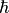

Introduction to Python¶
The Python language¶
- Python is an interpreted language (by opposition to a compiled language like C or Fortran)
- Interpreted language are easier to use than compile language but slower. This is not a problem for scientific calculation because complex algorithms are programmed in C or Fortran.
- There are two versions of Python, the version 2 (currently 2.7) and the version 3 (currently 3.7). There are small differences in the syntax. We are using the 2.7 version. This is still the version installed by default on Linux.
- We strongly advise to install the Anaconda distribution
https://www.anaconda.com/download/. This distribution was build for scientific calculation. It is available for different platforms (Linux, Mac or Windows).
A taste of Python¶
A first example in Python. The goal is to calculate the value of . We will use the following Taylor sum :
We will calculate this sum up to a value of  such that .
The variable
such that .
The variable  will set the precision of the calculation (the smaller is, the better is the precision).
will set the precision of the calculation (the smaller is, the better is the precision).
The Python code that can perform this calculation is
x = 3.14
epsilon = 1E-6
result = 0
n = 1
term = 1 # Initial value
while abs(term)>epsilon :
result = result + term
term = term * x/n
n = n+1
print(result)
We see in this example some specificity of Python : variable are not declared and also the block of instruction in the while loop is determined by the indentation (spaces at the beginning of the line). Each instruction that control a block (while, for, def, if, …) ends with a colon (‘:’).
How to execute Python code¶
This small script can be executed in different ways.
Copy-paste the example above in a file called
exponential.py. You can run the script by callingpython exponential.py
This is the basic way of executing a Python program, in a non interacting mode.
Run the python command shell simply with the
pythoncommand. You can then write directly commands.Using IPython, a more sofisticated python command shell. Run the
ipythoncommand in terminal. In this shell, you have introspection, tab completion, history, … You can use the%run exponentielle.pyto execute the script. The advantage of using a command shell is that you have access to all the variables of your program after its execution. A more aesthetic version of IPython is available using the commandipython qtconsole(or in the menu).Using Spyder. Spyder combines an IPython qt console and a text editor. This environment was made to look like Matlab. It is very convenient for developping small scripts. To execute our script, simply open spyder, copy the code and run it with the F5 function key. You will see the result printed in the console.
Using the Jupyter Notebok. This is used to create notebook similar to what is done in Mathematica. Run the command
jupyter notebook. Your default web browser should open a new tab with the application. You can then open a new project. Write the code in a cell, execute it with theshift + Enterkeys. Goe to the next cell to continue.PyDev (Python IDE for Eclipse). Eclipse is an integrated development environment (IDE) used in computer programming. It has a lot of functionality and is very convenient for large projects.
Variable in Python¶
A variable is a symbol that represents a value (an object). This object can be used or modified during the execution of the program. In Python, the value of each variable as a specific type (number, string, or your own type).
The creation of a variable is done using the = sign. The interpreter evaluate the right hand side (rhs) and assign to the variable the resul of the evaluation.
Note
In compiled language like C, usually the variable correspond to a place in memory. You should declare the type of the variable so that the compiler can allocate the memory. In those language, the instruction a=1 means : copy the value of rhs (in this case 1) to the memory designed by the variable a. In C, the memory is created with the variable. In Python, the memory is created with the content. And then is assigned to the variable.
Note
The name of a variable is any sequence of letter or number or _ which does not starts with a number. Variable are case sensitive
a = 1
A = 2
print(a)
_aA12bZz = 35 # OK
1J = 2 # Error
21A = 2 # Error but not the same as above. Why ?
Functions¶
Of course the exponential function should be defined as a function. This can be done using the following
def exp(x, epsilon=1E-6):
""" calculate e to the power x """
result = 0
n = 1
term = 1 # Initial value
while abs(term)>epsilon :
result = result + term
term = term * x/n
n = n+1
return result
The string that follows the definition of the function is a documentation string. It is the public documentation and is available to the user using the
help(function_name)command. It is not a comment (starting with a#). Comments are used to explain your code, public documentation are used to describe how to use your function.Of course the
expfunction exists already in the math module of python. We will see at the end of this section how to use it.The function has an optional argument
epsilon. There are three ways to call the functionexp(1.5) exp(1.5, 1E-8) exp(1.5, epsilon=1E-8)
In the first way, the default value is used. In the second and third way, the optional value is used. The third way is more convenient, especially when many optional arguments are used.
Data types in Python¶
This is a brief introduction, look at the official documentation to have more details.
Numbers¶
There are three kinds of numbers:
Integer (type
int). For examplea = 5, in binarya = 0b1001, in hexadecimala = 0x23. Integer have an unlimited size (print 2**1234)Floating point number. For example
a = 1234.234ora = 6.2E-34. Numbers are double precision (64 bits). The relative precision is 52 bits, about .a = 3.14 print(a == a + 1E-15) # False print(a == a + 1E-16) # True
- Complex number. They are stored as two floating point numbers. For example
a = 1 + 3J.
Operations are between number are : sum +, product *, difference or opposite number -, division /
integer division //, modulo % (for example 7%2), power (**).
Note
By default in Python 2, the division of two integer gives an integer. print 1/2 gives 0. In order to avoid this, one should force Python to use floats : a = 1/2.. In version 3 of Python, this behaviour has disappeared. In python2, it is possible to use the command from __future__ import division in order to use float division
>>> from __future__ import division
>>> print 1/2
0.5
For complex number, one can access to the real and imaginary parts
a = 1 + 3J
print(a.imag)
print(a.real)
print("Norm ", sqrt(a.real**2 + a.imag**2))
Boolean and comparison¶
Boolean have two values : True and False. Operation with boolean are (lowest to highest priority) : or, and and not. Comparison of number : <, <=, ==, > et >=. In order to test if two values are different, one can use <> ou !=.
Warning
The &, | and ~ symbols are used for the
and, or and not on integer bit by bit using binary representation (for example 6 &
5 give 4). They also work for booleans but they can be misleading as they have a very high priority
print(7==4 | 3==7) # 7==(4 | 3)==7 -> True
Note
exp1 or exp2 is equivalent to exp1 if exp1 else exp2 and exp1 and exp2 is equivalent to exp2 if exp1 else exp1.
If the result is known from the evaluation of exp1 then exp2 is not evaluated. The following example works even if x<=0
if x>0 and log(x)>4:
print("Hello")
Strings¶
Strings can be created using either " or '
s = "Peter"
s = 'Peter'
s = "Peter's dog"
To create a string with more than one line, use """
s = """Hello
What time is it ?"""
One can access to letters of the string in the same way as in a list (see below):
s = "Peter"
print(s[3]) # Element number 3, i.e. the fourth one ; i.e "e"
String concatenation is obtain using the ‘+’ sign
name = "Peter"
message = "Hello"
s = message + ", " + name
String formating is used when a variable is inserted in a string.
The recommended syntax is the following (it is not recommended to use the old syntax with the %)
hour = 15
minute = 30
s = "It's {0}:{1}".format(hour, minute)
print(s)
You can specify the argument of format using keys instead of position:
hour = 15
minute = 30
s = "It's {h}:{mn}".format(h=hour, mn=minute)
print(s)
It is possible to specify the way the number is displayed.
For example :
from math import pi
print('{0:.5f}'.format(pi)) # '3.14159'
c = 299792458. # Speed of light in m/s
print('c = {0:.3e} m/s'.format(c)) # '2.998e+08'
The full syntax (similar to C or Fortran) is described in https://docs.python.org/2/library/string.html#formatstrings.
Common methods on string are already implemented
- split
- strip
- join
- startswith, endswith
- lower(), upper()
- comparison (alphabetic order) : ‘Peter’>’John’ is True.
Example
s = " Where is Brian? Brian is in the kitchen. \r\n"
s = s.strip() # string with leading and trailing whitespaces characters removed
word_list = s.split() # list containing the words
word_set = set(word_list)
print("The sentence contains {0} different words".format(len(word_set)))
print("The words are {}.".format(' and '.join(list(word_set))))
if "Brian" in s:
print("The word Brian is in the sentence")
print(s.upper())
List in python¶
List creation
l = [1, 2, 3, 4] l = [] # Empty list l.append(3) # now l==[3] l.append(4) # now l==[3, 4] l.insert(0,3.24+1j) # now l==[3.24+1j,3,4]
Modification of an element
l[3] = 23
The command
range(n)creates the list[0,1,2, .., n-2, n-1]. This list starts at0et containsnnumbers (it stops atn-1).A list can contain elements of any type.
To create a list from an existing list, one can use a for loop
l = [] for i in range(n): l.append(i**2)
There is a direct way called list comprehension
l = [i**2 for i in range(n)]
List comprehension can be used to filter a list
[log(x) for x in my_list if x>0]
There are two convenient ways to loop through a list :
l = [1, 3, 5, "Pierre"] for elm in l: print(elm) for i,elm in enumerate(l): print(elm, " is the item number ",i," of the list")
We have introduced the for loop. It iterates over all the element of the list. It works for any sequence (like the string). This syntax is quite different from other programming language.
Note
We have seen that is is possible to add an element in the list. We have used the syntax l.append(elm). This is object oriented programming. The name of the object is followed by a dot and the name of the function used (this function is called a method) with its argument. Here, the append method is used to add elm to the list l.
Furthermore, note that the object l point to the same list. This list is modified. It’s like adding a page to a book (or a ring binder). This behaviour is different from the one described in the previous section with the format method on string. In this case, a new string is created and returned by the format method. The original string is not modified. The method append applied to a list, modify the list and return nothing.
Tuple¶
Tuples are used to collect few objects together. They look like list, but are not mutable (they cannot be modified)
# tuple with first name, name, birthday, and age.
someone = ('Jean', 'Dupont', 'July 13th, 1973', 38)
print('Name :', someone[1])
Tuple are used when a function returns more that one value
def fonction(x):
return x**2,x**3
a = fonction(4) # a is a tuple
a,b = fonction(4) # a->16 ans b->64
Dictionary¶
In a list or a tuple, elements are indexed by integers. In a dictionary, they are indexed by a key. Usually the key is a string or a number. The example of the previous section is more conveniently implemented using a dictionary
someone = {"first_name":"Jean", "name":"Dupont",
"birthday":"Jul 13th, 1973", "age":38}
print("Name :", someone['name'])
To loop through a dictionary, use the following
for key, val in dct.items():
print(key, val)
Set¶
Used to represent an unordered set of different elements. For example
a = set([1,2,3])
b = set([3,5,6])
c = a | b # union
d = a & b # intersection
Example
pwd = input('Enter a password with at least one punctuation')
punctuation = set("?,.;:!")
if (punctuation & set(pwd)) == set():
print("The password should contain at least one punctuation")
Index in Python¶
We have seen the list, str and tuple data type. They can be indexed. One can get an item using square brackets. In Python, the first element is addressed by 0. Negative indexed are from the end (l[-i] is equivalent to l[len(l)-i]). Therefore, the last element is addressed by -1.
Slices are used to extract a sub part of a sequence. For example :
s = "Hello World"
print(s[0:5])
The slice determined by start:stop will return a new object of the same type containing elements from
start to stop excluded. The length of the new object is stop-start. On can use negative numbers. for example s[1:-1] will return the string without the first and last letters. If start or stop is omitted, then it is replaced by 0 or the length of the object. For example s[1:] will return a string without the first letter.
Note that the start:stop(:step) notation is a shortcut to index with a slice object. The following are equivalent :
s[0:5] my_slice = slice(0, 5) s[my_slice]
None¶
There is a specific object in Python None. This is the object returned by function that ended without a return statement. The None object is often used as a “flag” to set a specific behaviour. The following log_data function (to create a log file) can either display the result or save it to a file depending on the value of the file argument.
def log_data(txt, file):
if file is None:
print(txt)
else:
file.write(txt)
Mutable objects / arguments in functions¶
In Python, a variable is simply an alias for an object that exists in the memory of the computer. An object may have more than one alias.
a = 3 # Python creates the object #1 containing 3.
b = a + 4 # Python creates the object #2 containing 7
c = a # The symbol c point to object #1
a = b # The symbol a point to object #2
c = 3.14 # The symbol c point to a third object. There is no way
# to point to object #1. Python can delete it.
There are two kinds of objects : objects that can be modified (mutable) and those that cannot. List, dictionary or sets are mutable object but numbers or string are not. Let us look to the following example
a = [2,3,7]
b = a
print(b[1])
a[1] = 4
print(b[1])
a = [5,6,7,8]
print(b[1])
- Line 1 : creation of list#1
- Line 2 : b point to the list#1
- Line 3 : python display item 1 of list#1 : it’s 3
- Line 4 : list#1 is modified
- Line 5 : python display item 1 of list#1 : it’s 4
- Line 6 : creation of list#2. Variable a point to list#2 and b to list#1
- Line 7 : python display item 1 of list#1 : it’s 4
The instruction a[1] = 4 and the instruction a = [5,6,7,8] are very different. In the first case, the object is modified in the second case a new object is created and linked to variable a
When a variable is the argument of a function, the mechanism is the same. Inside the function, the variable point to the same object. If this object is modified by the function, it is modified !
def exemple(arg):
print(arg[1])
arg[1] = 4
print(arg[1])
arg = [5,6,7,8]
a = [1,2,3,4]
exemple(a)
print(a[1])
Exercise : which number is displayed ?
a = [1,2,34,45]
b = a
c = a[1]
a[2] = 1
a[1] = 5
print(b[2]+c)
Local and global variable¶
Inside a function a variable is either local or global (in Python 3 a new concept of non local variable instead of global as been introduced, but for the following it is equivalent). By default, if there is an assignment inside the function (or if the variable is an argument), it is local. When there is no assignment and the variable is not an argument, the variable is global. By default, when the variable is global, one can read the object pointed out by the variable, one can modify it (but we do not assign a new object to the variable).
Global variable
a = 1 def example(): print(a)
Local variable
a = 1 def example(): a = 5 print(a)
Bug (python cannot read the local variable)
a = 1 def example(): print(a) a = 5 print(a)
There is a general rule : in a function, a global variable should be a well identified constant (like pi) or a well identified object (like a function). Everything else should be an argument of the function. If your function has to many arguments, consider using an object.
The global instruction in Python¶
Forget it !
Control structure¶
For loop¶
We have introduced the for loop with the list. The for loop works with object such as list, dict, set, string. With those object, the data are stored in the object and the for loop extract those data. The for loop work actually in the more general situation of iterable object (iterator). An iterator is an object that can produce the data for the for loop. The data can be calculated on the fly. For example, in python 2, range returns a list and xrange an iterator. In python 3, the range function returns an iterator.
If you want to iterate over two or more objects at the same time, use the zip command. For example :
X = [1,3,4,7]
Y = [3,5,1,2]
for x,y in zip(X,Y):
print(x,y)
If you want to the get the index, then use the enumerate instruction :
X = [1,3,4,7]
Y = [3,5,1,2]
s="Point number {i} at coordinate ({x},{y})"
for i,(x,y) in enumerate(zip(X,Y)):
print(s.format(x=x, y=y, i=i))
If you have a list of numbers and you want to iterate on intervals, use the following
for start, stop in zip(l[:-1], l[1:]):
print('length = {}'.format(stop-start))
Usually you don’t need the index, and we advise not to use the following :
for i in range(len(book)):
print(book[i])
but, the more human syntax,
for page in book:
print(page)
On can exit from a for loop using the break instruction and terminate one iteration using the continue instruction. The else occurs when the loop ends “normally” (without break) :
from math import ceil, sqrt
for p in xrange(int(ceil(sqrt(m)))):
if p<=1:
continue
if m%p==0:
is_prime = False
break
else:
is_prime = True
The following example will be much simpler using a separate function. Indeed, it is possible to leave a function a any time using the return instruction.
def is_prime(m):
for p in xrange(2,int(ceil(sqrt(m)))):
if m%p==0:
return True
return False
Generators¶
It is possible to create you own iterator using a function like syntax : this is a generator. The idea is to replace the return by a yield statement. Each time the function encounter a yield it will retrun the value to the for loop.
Examples :
- def simple_generator():
- yield 1 yield 2
- def concatenate(liste1, liste2):
- for elm in liste1:
- yield elm
- for elm in liste2:
- yield elm
- def matrix_index_generator(N1, N2):
- for i in range(N1):
- for j in range(N2):
- yield (i, j)
Function¶
Optional arguments¶
Look to the following function (from scipy.integrate module):
def quad(func, a, b, args=(), full_output=0, epsabs=1.49e-8,
epsrel=1.49e-8, limit=50, points=None, weight=None,
wvar=None, wopts=None, maxp1=50, limlst=50):
"""
Compute a definite integral.
...
"""
Using this function, you can change in an explicit way the relative precision of the calculation :
quad(exp, 0, 10, epsrel=1E-3)
If all your optional arguments are in a dictionary, you can pass them directly using the following syntax :
option = {"epsrel":1E-3, 'limit':100}
quad(exp, 0, 1, **option)
Lambda function¶
Use to define a function with an expression. It is very usefull when the function is an argument of a function. The syntax is
lambda arg1, arg2, ...: expr.
Using the previous example :
quad(lambda x:exp(-x**2), 0, 1)
Variable length argument list¶
It is possible to define a function with a variable number or arguments. The general syntax is :
def my_function(a, b, *args, **kwd):
print(args)
print(kwd)
my_function(1,2,3,4,e=3)
# args = (3,4)
# kwd = {'e':3}
Inside the function, args is a tuple containing unamed arguments and kwd is a dictionnary containing the named arguments.
It is also possible to call a function by splitting a tuple or a dictionnary to make them arguments (or keyword arguments for a dictionnary)
def f(a, b, c=2):
print(a, b, c)
arg = (1, 2)
f(*arg)
kwd = {'b':1, 'c':4}
f(2, **kwd)
A typical example of variable length argument list occurs when one wants to pass arguments from one function to another directy. For example, the erf function can be calculated by integrating
def erf(x, **kwd):
return quad(lambda x:exp(-x**2), 0, x, **kwd)
print(erf(1, epsrel=1E-4))
Accents and non Latin letters¶
It can be useful to use letters with accent or non Latin letter in Python. The behaviour is very different between Python 2 and Python 3.
ASCII¶
The old way to use non English Latin letter was by extending the ASCII. This standard give a number between 0 and 127 to each English letter and usual symbol. The number for 128 to 255 were defined in local standards (for example the Windows-1252 for computer in western Europe - or ISO 8859-1 for linux/unix). Of course local standard are not convenient and from the beginning of the 1990s, the unicode standard was developed.
Unicode¶
“Unicode is a computing industry standard for the consistent encoding, representation and handling of text expressed in most of the world’s writing systems.” (wikipedia). Basically, unicode give a number to each written letter of all the known language (from the language of mathematics to Egyptian hieroglyphs). For example, the number associate to the “Planck constant over two pi” () is 8463. A unicode string can therefore be represented by a list of integers. In order to display such a string, the computer need the correct font. A font, will usually cover only a specific part of the unicode standard.
The main problem is to store (encode) a unicode string in a file. Because unicode number are smaller than , an easy way will be to store each character in 32bits (4 bytes). This will be very convenient, however it will not be compatible with ASCII standard in which one character corresponds to one byte. The UTF-8 encoding solves this problem : if the byte is smaller than 127, it indicates an ASCII character. If not, you have to look to more than one byte to get the unicode character.
Unicode in Python 2¶
In Python 2, string are ASCII strings. In order to use unicode string, you need to specify it with a leading u. Further more, a file is assumed to be ASCII. If your file is a unicode file, you need to specify the encoding at the beginning of the file. This is done in the first or second line of the file with pseudo comment string of the form # -*- coding: encoding_name -*-. The default encoding is utf-8 for linux et probably latin-1 for windows.
Examples
# -*- coding: utf-8 -*-
s = u"Pierre Cladé"
print s
hbar = 6.62E-34/(2*pi)
print u"\u210F = {0:5.2e}".format(hbar}
The function unichr``allows to programatically convert a number to the correspnding unicode letter. The function ``ord to the opposite.
Unicode in Python 3¶
In Python 3, string are by default unicode string. Furthermore, not only strings are unicode, but also the python code can also use unicode. The following code will work using python 3
α = 1/137.035990
print('The value of the fine structure constant is {0}'.format(α))
We strongly advise to limit the use of unicode to string and not to the python code as in the example above. Indeed, two different unicode characters can be displayed the same way
A = 1
Α = 2
print(A)
print(Α)
In python 3, use chr to programatically convert a number to the corresponding unicode letter
In python 3, unicode string are used to represent text strings. In order to represent a list of bytes, a new type has been introduced, called byte strings. They can be created directly with the b prefix
b'This is a byte string'
Byte strings are used when dealing with communication at low level (TCP/IP socket or communication with an instrument). To convert a string to bytecode and vice versa , use the encode and decode methods :
“α = 1/137”.encode(‘utf-8’) b’xcexb1 = 1/137’.decode(‘utf-8’)
Files and file like objects¶
Files¶
Example
f = open('/tmp/test', 'w', encoding='utf-8') #
f.write('Bonjour')
f.close()
f = open('/tmp/test') # default is reading
print f.readlines()
f.close()
The open function creates a file object. The second argument is used to say if we want do write (‘w’) or read (‘r’) the file. The file objects has several methods :
write(str): To write one string in the fileread: To read all the file.read(n)to read a given number of characters.readline: read one line of the filerealines: return a list with one item per line.
With statement¶
The with statement is a relatively new syntax in Python
with open("x.txt") as f:
data = f.read()
do_something
The with statement will take care of closing at the end of the instructions, even if an error occurs.
File like objects¶
Many interface are similar to files and works the same way.
For example, you can open a url using the urllib and read its content
import urllib
#Open Sherlock Holmes an count in how many lines there is the word Holmes
url = "http://www.gutenberg.org/cache/epub/1661/pg1661.txt"
file = urllib.urlopen(url)
cpt = 0
for line in f.readlines():
if 'Holmes' in line:
cpt += 1
print 'The book contains {0} times the word Holmes'.format(cpt)
Common text based interface to instrument (like RS232, VISA, GPIB, …) works also like a file :
import visa
inst = visa.GPIBInstrument('GIPB::19')
inst.write('*IDN?\r\n')
print inst.readline()
import serial
verdi = serial.Serial(port='COM7', baudrate=19200)
verdi.write('?P\r\n')
power = verdi.readline().strip()
Modules¶
At the beginning of this chapter, we have created a function to calculate the exponential. How to use this exp from another file ? A solution could be the execute the file from the script. However, there is a much more convenient technique in python. The function be can imported using the command
from exponentielle import exp
We do not put the .py file extension. Using modules has many advantages :
- If the module was already imported, python do not execute the file a second time.
- One can choose what we want to import in the module.
- Python can automatically looks for different paths to find the file.
Python is not a general purpose language. All the function that are specific are defined in a module. Mathematical function (and constants) are in the math module.
They can be imported in different ways :
Import of the module
import math print math.sin(math.pi/3)
Import of specific objects in the module
from math import sin, pi print sin(pi/3)
Import of all the objects defined in the module
from math import * print sin(pi/3)
The first method is more verbose because we have to specify the module name every time. However, we have to use this method in our example if we want to compare the exp function from two different modules.
In general, the second method should be preferred over the third one. Indeed, when all the functions are imported it is not easy then to know from which module the function was imported. Furthermore, this import can override existing function (for example, there is an open function is the module os. Therefore the command from os import * will override the standard open function).
The import * can be used for module with well known functions that are used many times in a program. This is the case for the math module.
Package¶
A package is a group of module (in other language it is called a library).
Many package are available on the Pypy web site. The pip shell command can be used to download and install the package on your computer. For example if you want to install the PyDAQmx package, simply run the command :
pip install PyDAQmx
If you don’t have root permission, then use the --user option.
If the package is not available on Pypi, then the usual way consist in downloading the package and then install it by running the setup script :
wget https://pypi.python.org/packages/source/P/PyDAQmx/PyDAQmx-1.3.2.tar.gz
tar -xvzf PyDAQmx-1.3.2.tar.gz
cd PyDAQmx-1.3.2
python setup.py install --user
A package is a collection of modules and sub-packages. In order to create a package, you simply have to put the files into the same directory (called for example my_package). Python will know that this directory is a package if there is a file called __init__.py in the directory. This file can be empty.
In order to import the modules, you can then do import my_package.mod1 or from my_package import mod1, …
The __init__.py is a python module whose content is imported by from my_package import ....
Python will be able to import “my_package” :
If your current working directory is the directory containing the “my_package” directory
If this directory is in your search path. You can dynamically a directory into the search path using the following :
import sys sys.path.insert(0, 'directory/containing/my_package')If your directory is in the the “PYTHONPATH” environment variable.
If you have installed your package (see instruction bellow).
Inside a package, it is common to import modules or sub-packages, for example in the __init__.py file. This is a local import. You should indicate to python that an import is local by prefixing the module name with a dot. For example, in the __init__.py of my_package
from .mod1 import my_function
from . import mod1
mod1.my_function()
If you are in a sub-package, then you can import from the parent package using two (or more) dots.
It is easy to create you package and distribute it. You have to write a setup.py file containing some informations about your package. Then Python will take care of everything. The setup.py file should be in the same directory as the “my_package” directory. A minimal example of a setup.py file is the following :
#!/usr/bin/env python
# -*- coding: utf_8 -*-
from distutils.core import setup
__version__ = "alpha"
long_description="""This is a very nice package
"""
setup(name='my_package',
version=__version__,
description='A very nice package',
author=u'François Pignon',
author_email='francois.pignon@trucmuch.fr',
url='',
packages=['my_package'],
)
Then you can execute the following commands :
python setup.py install # Install the package
python setup.py sdist # create a tar.gz or zip of your package
pip install -e . --user
The last command is very useful for developers. It installs the project in editable mode, which means that modification of the project files will be taken into account (a simple install will copy the files to another place).
The twine library allows you to publish you packages on Pypi in an easy way :
twine upload dist/*
If you want to make test, then you can use the test.pypi.org instance :
twine upload --repository-url https://test.pypi.org/legacy/ dist/*
Error and Exception¶
Error¶
You should read and understand errors of Python. Python always indicate the line of the error, except when there is a syntax error (see examples bellow).
Examples of common error
from math import sin, sqrt
a = sin[1]
b = cos(2)
a,b,c = 2,8,4
Delta = b**1 - 4*a*c
root1 = (-b + sqrt(Delta)/(2*a)
root2 = (-b - sqrt(Delta)/(2*a)
mylist = [1,2,34]
print mylist(2)
if 1==1:
print 'Hello'
print 'World"
if 1==1
print 'Hello World'
Try … except¶
In Python, it is possible to catch an error an have a specific behaviour. This is usually a very efficient way of dealing with specific cases. For example, if you want to take the sqrt of a negative number, python will throw a ValueError exception. You can then handle the specific case :
a = -1
try:
b = sqrt(a)
except ValueError:
b = 1j*sqrt(-a)
Of course this example can be solved with a if else statement. Let’s look to the following :
filename = "/tmp/balbla"
if not os.path.exists(filename):
print 'The file does not exists'
else:
print open(filename).readlines()
Or the following :
filename = "/tmp/balbla"
try:
print open(filename).readlines()
except IOError:
print 'The file does not exists'
The second example is more safe : the execution of the program can be interrupted at any time by the OS to run another process. What happens if the file is deleted between the test and the open? The second example is also faster : the test is always performed by the open function, there is no reasons to make it twice. There is no overhead in using a try.
Raise exception¶
It is possible to create you own exception.
Example
from math import sin, asin
def snell_descartes(theta1, n1, n2):
sin_theta2 = n2*sin(theta2)/n1
if abs(sin_theta2)>1:
raise Exception('Total internal reflection not allowed')
return asin(sin_theta2)
Or using try/except :
from math import sin, asin
def snell_descartes(theta1, n1, n2):
sin_theta2 = n2*sin(theta2)/n1
try:
return asin(sin_theta2)
except ValueError:
raise Exception('Total internal reflection not allowed')
You can of course use the snell_descartes in a try except. It is possible to create your own error (like IOError, ValueError).
Exercise : Create a function second_order_equation that solves the equation . This function will have an optional argument allow_complex that if true return complex roots else raise a ValueError exception.
Assert and test¶
A very good practice in programming is to always test your functions. Some programming guide says that you should write your test before writing your functions. We advise at least to write them at the same time. Specific modules exist on Python to deal with automatic tests (like the unittest module). This is beyond the scope of this introduction.
Let us look at an example. Imagine that you want to write your own sqrt function. You should test that it works for positive number and give an error for negative. The best way to test is to use the assert statement (see below).
from math import sqrt
def my_sqrt(x):
return sqrt(x)
if __name__=="__main__":
import random
x = random.random()
assert my_sqrt(x)**2==x, "The my_sqrt functions does not\
return the square root"
try :
x = sqrt(-1)
except ValueError:
pass
else:
raise Exception('The my_sqrt function does not raise\
an error for negative numbers')
Testing you code on simple examples helps you to build large projects. By writing tests, you can always check that there are no side effects due to modifications you are doing on the code.
Exercise : Create a full test for the second_order_equation equation written above.
The Python standard library¶
The Python standard library (https://docs.python.org/2/library/) contains tens of modules that allows to perform usual operations. Below is a list of usefull modules for every day programming. It does not include modules specific to scientific calculation because they are not part of the standard library.
- string — Common string operations
- re — Regular expression operations
- datetime — Basic date and time types
- math — Mathematical functions
- shutil — High-level file operations
- os — Miscellaneous operating system interfaces
- logging — Logging facility for Python
- email — An email and MIME handling package
- sys — System-specific parameters and functions
- urllib — Open arbitrary resources by URL
- time — Time access and conversions
Regular expressions¶
A regular expression is a string that describe a set of possible strings. For example on unix shell, the * mean any sequence of characters (cp *.jpg directory will copy all the jpeg files to the given directory).
In the re package of python, there is specific syntax that should be used to describe regular expression. This syntax is described in the documentation https://docs.python.org/2/library/re.html.
For example, I want to parse a date given by a string like “01-02-2013”. In English, this is described as two digits followed by a - then two digits another - and four digits. The \d should be used to describe a digit. The date will follow the following regular expression : \d\d-\d\d-\d\d\d\d. This can match exactly the previous string. But if you want to allow more or less digits (like “1-2-2015”) you can use the + : the regular expression \d+-\d+\d+ means one or more digits followed by a dash and so on.
The re package allow you to test if a string matches a regular expression
import re
date = '11-02-1980'
date2 = "Feb. 11, 1980"
print re.match("\d\d-\d\d-\d\d\d\d", date) # return something
print re.match("\d\d-\d\d-\d\d\d\d", date) # return nothing
Of course it is very useful once a string match the regular expression to extract the relevant information. This can be done by grouping the pattern in parenthesis. And then use the groups method of the result.
import re
date = '11-02-1980'
result = re.match("(\d\d)-(\d\d)-(\d\d\d\d)", date)
if result is not None:
print result.group(1) # print the first group
Or, using a more explicit syntax:
import re
date = '11-02-1980'
result = re.match("(?P<day>\d\d)-(?P<month>\d\d)-(?P<year>\d\d\d\d)",
date)
if result is not None:
print result.group('day')
This is a very short introduction to the regular expression. Look to the documentation for more detailled.
Exercice : A directory contains a number of file likes IMAGE001.jpg, IMAGE002.png and so one. Create a function that check if a file name satisfy the following pattern and return the image number (the extension are case insensitive and given in a liste : .jpg, .png, .pdf, .jpeg). Create a function which from a given directory returns next available number (use os.listdir).